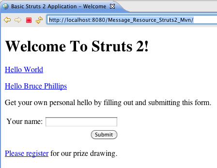
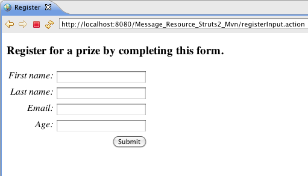
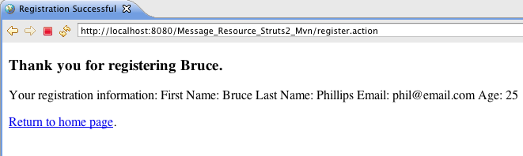
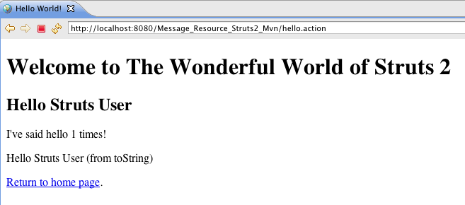
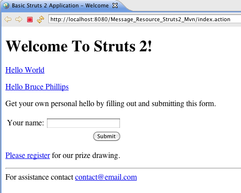
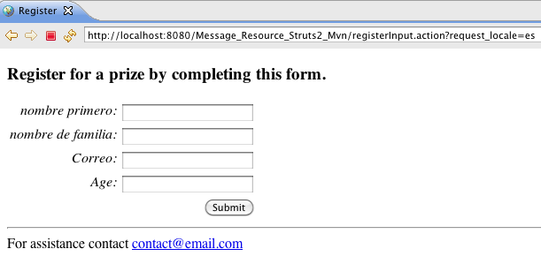

| This tutorial assumes you've completed the Form Validation tutorial and have a working Form_Validation_Struts2_Ant (or Form_Validation_Struts2_Mvn) project. The example code for this tutorial, Message_Resource_Struts2_Ant or Message_Resource_Struts2_Mvn, is available on Google Code - http://code.google.com/p/struts2-examples/downloads/list. After downloading and unzipping the file, you'll have a folder named Message_Resource_Struts2_Ant (or Message_Resource_Struts2_Mvn). In that folder will be a README.txt file with instructions on now to build and run the example application. |
Introduction
In this tutorial we'll explore using Struts 2 message resource capabilities (also called resource bundles). Message resources provide a simple way to put text in a view page that is the same through out your application, to create form field labels, and to change text to a specific language based on the user's locale (i18n).
The code provided in this tutorial may be added to the Form Validation example or you can download this tutorial's complete example from Google Code - http://code.google.com/p/struts2-examples/downloads/list as either a Ant build or Maven build project.
| The Struts 2 user mailing list is an excellent place to get help. If you are having a problem getting the tutorial example applications to work search the Struts 2 mailing list. If you don't find an answer to your problem, post a question on the mailing list. |
Message Resource Property Files
In a Struts 2 web application you may associate a message resource property file with each Struts 2 Action class by creating a properties file with the same name as the Action class and having the .properties extension. This properties file must go in the same package as the Action class. For our tutorial example, let's say we want to place the form field labels into a separate file where we can easily change them and also provide the capability to display the labels in other languages.
If you're doing this tutorial after completing Form Validation then you can make these changes to that tutorial's example application. Or you can download the finished example application for this tutorial from Google Code - http://code.google.com/p/struts2-examples/downloads/list.
Put the text below in a file named Register.properties in the org.apache.struts.register.action package in src folder (if using the Ant version) or in the src/resources/java folder (if using the Maven version).
personBean.firstName=First name
personBean.lastName=Last name
personBean.age=Age
personBean.email=Email
thankyou=Thank you for registering %{personBean.firstName}.
The above is just a standard Java properties file. The key is to the left of the = sign and the value for the key is to the right. When the Register action is executed these properties will be available to the view page by referencing the key name.
Struts 2 Key Attribute
The Struts 2 key attribute can be used in the textfield tag to instruct the framework what value to use for the textfield's name and label attributes. Instead of providing those attributes and their values directly, you can just use the key attribute.
If you open register.jsp from the Form Validation tutorial you'll see this Struts 2 textfield tag:
<s:textfield name="personBean.firstName" label="First name" />
Instead of specifying the name and label attributes you can just use the key attribute.
<s:textfield key="personBean.firstName" />
The value for the key attribute instructs the Struts 2 framework to use the same value for the name attribute (personBean.firstName). For the label attribute's value the value of the key attribute is used by the Struts 2 framework to find a key in a properties file with the same value. So in our example, Struts 2 will look in Register.properties for a key with a value of personBean.firstName. The value of that key (First name) will be used as the label attribute's value.
To enable the key attribute to find the properties file, the display of the view page must be the result of executing a Struts 2 Action class. Right now if you examine index.jsp from the Form Validation tutorial the link to the register.jsp page is a standard URL.
<p><a href="register.jsp">Please register</a> for our prize drawing.</p>
We need to change the above link so that it goes through the Register.java Struts 2 Action class. Replace the above with this markup.
<s:url action="registerInput" var="registerInputLink" /> <p><a href="${registerInputLink}">Please register</a> for our prize drawing.</p>
We use the Struts 2 url tag to create a link to action registerInput. We then use that link as the value for the href attribute of the anchor tag. We must define the registerInput action in struts.xml. Add the following to struts.xml.
<action name="registerInput" class="org.apache.struts.register.action.Register" method="input" > <result name="input">/register.jsp</result> </action>
The above action node instructs the Struts 2 framework to execute class Register's input method in response to action registerInput. The input method is inherited by class Register from class ActionSupport. The default behavior of the inherited input method is to return the String input. The result node above specifies that if the returned result is "input" then render the view register.jsp.
By doing the above the view page register.jsp will have access to the properties defined in Register.properties. The Struts 2 framework will make those properties defined in Register.properties available to the view page since the view page was rendered after Register.java (the Struts 2 Action class) was executed.
Follow the instructions (README.txt) in the project to create the war file and copy the war file to your servlet container. Open a web browser and navigate to the home page specified in the README.txt file (index.action). You should see a link to registerInput.action when mousing over the hyperlink Please Register.

When you click on the Please Register link your browser should display the register.jsp. The form field labels should be the key values from the Register.properties file.

Struts 2 Text Tag
We can also use the Struts 2 text tag to display values from a properties file. In thankyou.jsp add this text tag instead of the h3 tag that is in thankyou.jsp.
<h3><s:text name="thankyou" /></h3>
Since thankyou.jsp is also rendered after executing the Register.java Action class, the key thankyou and its value will be available to the view page.

How did the value entered for the first name input field get displayed on thankyou.jsp? Look back at the value for the thankyou key in the Register.properties file.
thankyou=Thank you for registering %{personBean.firstName}.
The markup %{personBean.firstName} tells Struts 2 to replace this part with the result of calling getPersonBean, which returns a Person object. Then call the getFirstName method which returns a String (the value the user inputted into the personBean.firstName form field on register.jsp).
Package Level Properties
What if you want a properties file with keys and values that can be referenced from multiple view pages and those view pages are rendered after executing different Action classes? Struts 2 has the ability to use multiple property files provided the property file is found in the package hierarchy.
Place the following in a file named package.properties and save that file in package org.apache.struts (in src folder if using Ant version or in src/main/resources if using Maven version)
greeting=Welcome to The Wonderful World of Struts 2
Now any view rendered by an Action that is in the hierarchy org.apache.struts... can use a Struts 2 text tag with a name attribute value of "greeting" to display the value of the greeting property key. For example add the following markup to helloworld.jsp before the h2 tag.
<h1><s:text name="greeting" /></h1>
Then rebuild the war file and deploy it to your servlet container. Go to index.action and click on the link for Hello World. You should see:

The property keys and values defined in package.properties are available to any view that is rendered after executing an Action class that is the package hierarchy that includes package.properties.
Global Properties
You can also specify a global property file in struts.xml. The keys and values defined in that property file will be available to all the view pages that are rendered after executing an Action class.
Add the following to a file named global.properties (note the name doesn't have to be global).
contact=For assistance contact <a href='mailto:contact@email.com'>contact@email.com</a>
Save the global.properties file in either the src folder (if using Ant version) or the src/main/resources folder (if using the Maven version).
To inform the Struts 2 framework about the global.properties file add the follow node to struts.xml after the constant name="struts.devmode" node.
<constant name="struts.custom.i18n.resources" value="global" />
To use the contact key in a view page, add the following markup to index.jsp just before the closing body tag.
<hr /> <s:text name="contact" />
Rebuild the war file, deploy it to your Servlet container, and then go to index.action. You should see:

Struts 2 will look for a property key of contact in all the property files starting with the property file that matches the Action class, then in the property files that are in the package hierarchy of the Action class, and then in any property files specified in struts.xml. For this example Struts 2 will find the contact key in global.properties. The value of the contact key will be displayed where we have put the text tag.
You can add the text tag above to all the JSPs in this example.
Internationalization (i18n)
Using message resource files (resource bundles) also enables you to provide text in different languages. By default, Struts 2 will use the user's default locale. If that locale is en for English then the property files used will be the ones without a locale specification (for example Register.properties). If the locale is not English but say Spanish (es) then Struts 2 will look for a properties file named Register_es.properties.
To provide an example of Struts 2 support for i18n create a file named Register_es.properties and in that file add the following Spanish translations.
personBean.firstName=Nombre
personBean.lastName=Apellidos
personBean.age=Edad
personBean.email=Correo
thankyou=Gracias por registrarse, %{personBean.firstName}.
| My apologies to Spanish language speakers for any mistakes in the Spanish translations. |
Save the Register_es.properties file in the same package as Register.properties.
In our example application, we need to tell Struts 2 to use a locale value of es (since we're not in a Spanish locale) instead of the default locale value of our location (which is en). Add the following markup to index.jsp.
<h3>Registro español</h3> <s:url action="registerInput" var="registerInputLinkES"> <s:param name="request_locale">es</s:param> </s:url> <p><a href="${registerInputLinkES}">Por favor, regístrese</a> para nuestro sorteo</p>
In the above markup we've added a parameter named request_locale to the URL. The value of that parameter is es. The Action class that responds to this URL (Register.java) will see that the locale is es and will look for property files with _es (for example Register_es.properties). It will use those property files to find the values of the property keys referenced by the view page (e.g. personBean.firstName).
After clicking on the above link you should see the same form as before but with the form field labels in Spanish.

If we implement the same concept by creating _es.properties versions of global.properties (global_es.properties) and package.properties (package_es.properties) then we can create a complete registration web page in Spanish. Download the finished example application for this tutorial from Google Code - http://code.google.com/p/struts2-examples/downloads/list to see those property files and run the complete example with the registration form in Spanish.
Summary
We've covered how to use message resources (resource bundles) in Struts 2 and also introduced how Struts 2 enables internationalization (i18n) in this tutorial. To fully understand these concepts and learn more about Struts 2 consult the main Struts 2 documentation available at http://struts.apache.org.
Up Next
In our next tutorial we'll cover how to configure Struts 2 to handle any uncaught exceptions.
| Next | Onward to Exception Handling |
|---|---|
| Prev | Return to Form Validation |